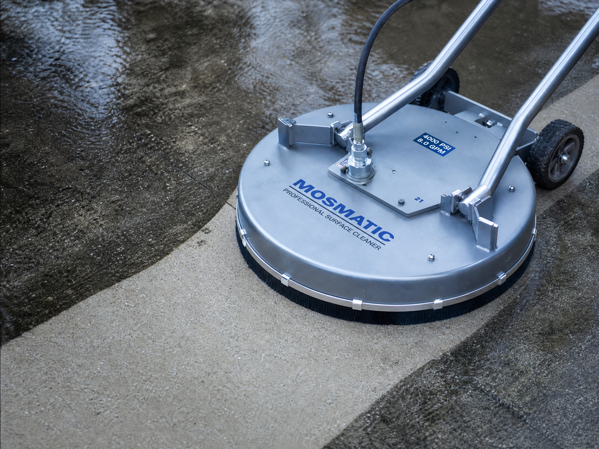

Concrete driveways and sidewalks
Remove loose debris and identify oil, rust, tire marks, or organic growth. Pretreat the specific stain, clean in consistent overlapping passes, and direct the final rinse toward a safe drainage area.
Request a driveway cleaning estimate